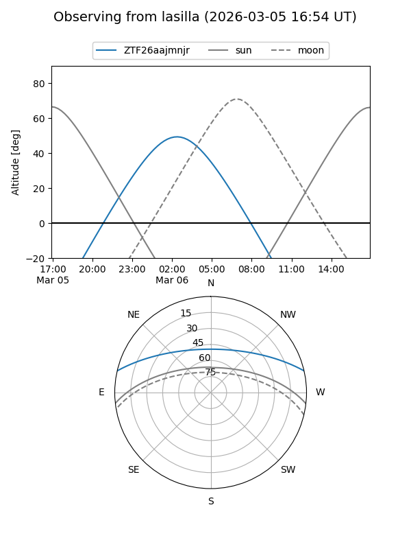
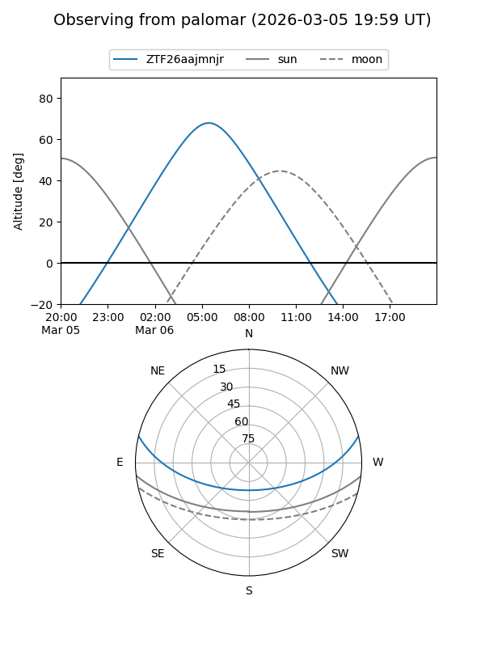

ZTF26aajmnjr
Target ZTF26aajmnjr at 2026-03-06 05:49
Aliases and brokers:
FINK: link
Lasair: link
ALeRCE: link
alt names
ZTF26aajmnjr (ztf,fink_ztf)
Coordinates:
equatorial (ra, dec) = 128.3218,+11.44335
equatorial (HMS+DMS) = 08:33:17.24,+11:26:36.07
galactic (l, b) = (213.9397,+27.74147)
Flags:
Photometry:
last ztfg=19.55
1 ztfg detections
Lightcurve
Visibility


Additional plots